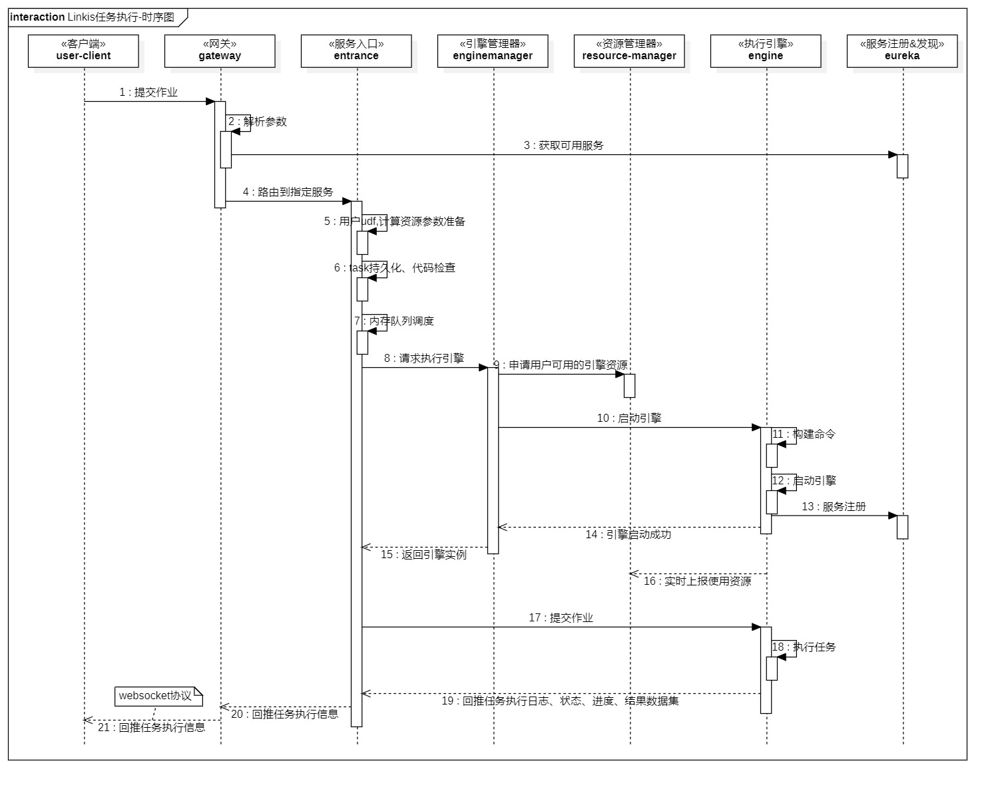
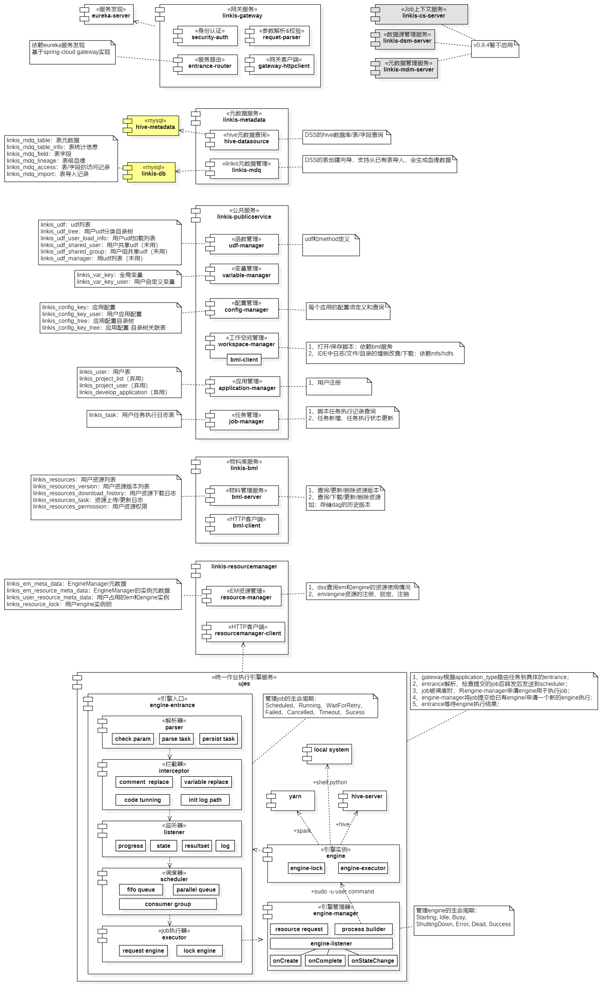
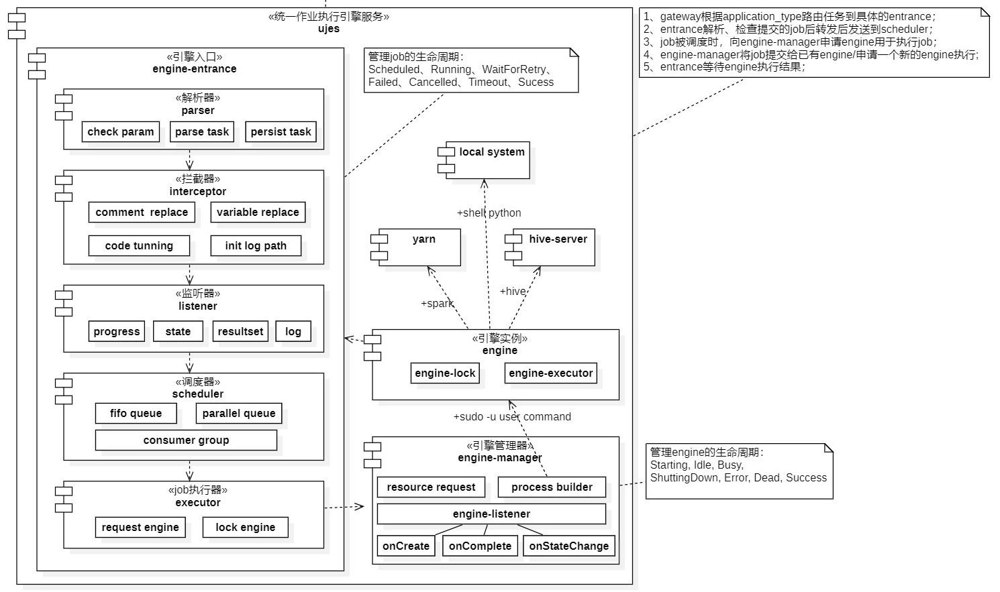
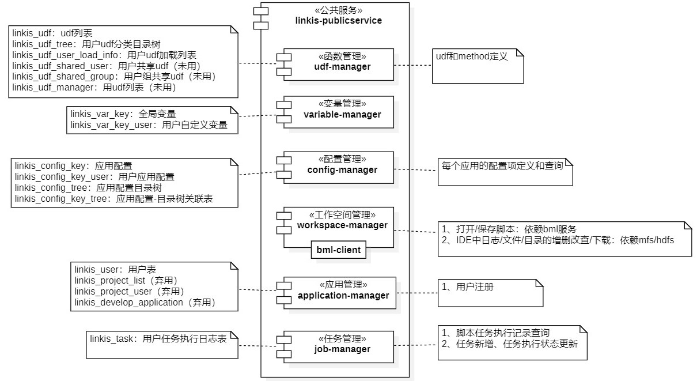

Linkis作为一个计算中间件，是scritpis，visualis，qualitis，exchangis等数据应用组件的计算入口，至关重要。
本文主要的关注点是linkis的组件构成，以及linkis中的作业执行流程；
linkis任务执行流程

job简要执行流程
- gateway根据application_type路由任务到具体的entrance；
- entrance解析、检查提交的job后转发后发送到scheduler；
- job被调度时，向engine-manager申请engine用于执行job；
- engine-manager将job提交给已有engine/申请一个新的engine执行;
- entrance等待engine执行结果；
linkis组成

linkis计算中间件核心的是ujes统一作业执行服务，但同时也包含计算所需的网关服务、资源管理服务、元数据服务、物料库和公共服务等；下面逐个说明
eureka 注册中心
实现服务注册和发现，后续会替换为nacos；
linkis-gateway
网关，负责服务路由，依赖eureka服务发现，基于spring-cloud gateway实现;
linkis-resourcemanager
资源管理服务
组件功能
- dss查询em和engine的资源使用情况
- em/engine资源的注册、锁定、注销
组件相关表
- linkis_em_meta_data：EngineManager元数据
- linkis_em_resource_meta_data：EngineManager的实例元数据
- linkis_user_resource_meta_data：用户占用的em和engine实例
- linkis_resource_lock：用户engine实例锁
linkis-ujes
统一作业执行服务

组件功能
包含entrance、enginemanager和engine三类服务
- entrance：服务入口，管理job的生命周期：Scheduled、Running、WaitForRetry、Failed、Cancelled、Timeout、Sucess；
- 包含解析器、拦截器、监听器、调度器、执行器等多层过滤处理逻辑，超级复杂；
- enginemanager：执行引擎管理器，管理engine的生命周期：Starting,、Idle、Busy、ShuttingDown、Error、Dead、Success；
- engine：执行引擎，提交任务和具体的执行着交互；
linkis-bml
物料库
- 查询/更新/删除资源版本
- 查询/下载/更新/删除资源
如：存储dag的历史版本
组件相关表
- linkis_resources：用户资源列表
- linkis_resources_version：用户资源版本列表
- linkis_resources_download_history：用户资源下载日志
- linkis_resources_task：资源上传/更新日志
- linkis_resources_permission：用户资源权限
linkis-metadata
元数据服务
组件功能
- scriptis的hive数据库/表/字段查询
- scriptis的表创建向导，支持从已有表导入，会生成血缘数据
组件相关表
- linkis_mdq_table：表元数据
- linkis_mdq_table_info：表统计信息
- linkis_mdq_field：表字段
- linkis_mdq_lineage：表级血缘
- linkis_mdq_access：表/字段的访问记录
- linkis_mdq_import：表导入记录
linkis-publicservice
公共服务

包含函数管理、变量管理、配置管理、工作空间管理、用户注册、任务管理等6个子模块
udf-manager
函数管理
组件功能
udf和method定义
组件相关表
- linkis_udf：udf列表
- linkis_udf_tree：用户udf分类目录树
- linkis_udf_user_load_info：用户udf加载列表
- linkis_udf_shared_user：用户共享udf（未用）
- linkis_udf_shared_group：用户组共享udf（未用）
- linkis_udf_manager：用udf列表（未用）
variable-manager
变量管理
组件功能
- 定义变量
组件相关表
- linkis_var_key：全局变量
- linkis_var_key_user：用户自定义变量
workspace-manager
工作空间管理
组件功能
- 打开/保存脚本：依赖bml服务
- IDE中日志/文件/目录的增删改查/下载：依赖mfs/hdfs
application-manager
应用管理
组件功能
- 用户注册
组件相关表
- linkis_user：用户表
- linkis_project_list（弃用）
- linkis_project_user（弃用）
- linkis_develop_application（弃用）
job-manager
任务管理
组件功能
- 脚本任务执行记录查询
- 任务新增、任务执行状态更新
组件相关表
- linkis_task：用户任务执行日志表